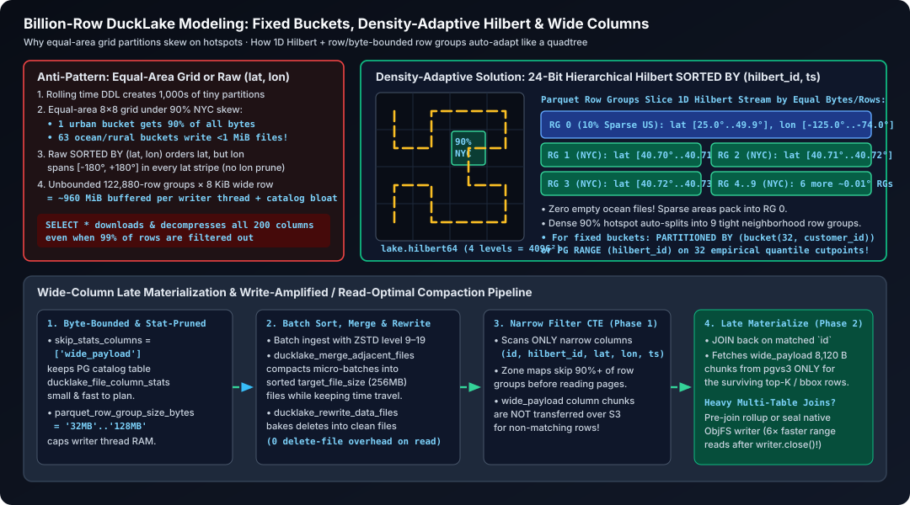

Publish analytical snapshots, not repeated OLTP scans
Guide index · Before: demo source tables · Next: cache
Goal: extract a deliberate source snapshot once, then run repeated scans on Parquet/DuckLake with a measured freshness budget. PostgreSQL remains the OLTP system; DuckDB executes the analytical SQL; pgvs3 stores or caches the object bytes. This is application-managed materialization, not built-in CDC. Research basis.

Choose an analytical storage format
| Need | Choice | Cost or limit not to overlook |
|---|---|---|
| Portable immutable extracts; simplest publication | Parquet + application manifest | You own refresh, schema evolution, deletes and manifest/reader retention. |
| Catalog snapshots, table DDL and multi-file lifecycle | DuckLake + PostgreSQL catalog + pgvs3 | Catalog/object commits are separate; maintain files, snapshots and PostgreSQL. |
| Experiment with native DuckDB small commits | Differential | Local repository, external writer fencing and a retained large sync-WAL failure. Not the default. |
| Native format over SlateDB | ObjFS | Extra memory, write/retention costs and SQL read-only clients that still PUT retention checkpoints. Not a standby endpoint client. |
Choose native objects or origin-backed staging independently of the file format. Object cache hits reduce remote I/O, not decoding, joins or aggregation. For repeated join-heavy queries, a local DuckDB materialization can help, but its refresh, extra storage, RSS and restart/recovery are separate costs; pgvs3 does not manage that accelerator.
The locally qualified DuckLake workflow is one coordinated writer per dataset prefix/catalog and many readers. That is not an upstream single-writer limit: DuckLake’s PostgreSQL catalog supports multi-client concurrency with conflict handling. Concurrent-writer/failover policies need their own qualification; a shared bucket is neither a global writer lock nor a transaction coordinator.
Export a bounded source snapshot
Prerequisites: DuckDB 2.0.0, httpfs/postgres extensions, the disposable guide_app.orders fixture and the quick-start gateway. Create a fresh native bucket with curl -fsS -X PUT "$PGVS3_ENDPOINT/guide-analytics". Use a source read-only role in real deployments; the local credentials below are demo-only.
In a new DuckDB session (the test substitutes only host/port/database):
INSTALL httpfs; LOAD httpfs;
INSTALL postgres; LOAD postgres;
CREATE SECRET (TYPE s3, KEY_ID 'test', SECRET 'test', REGION 'us-east-1',
ENDPOINT '127.0.0.1:8014', URL_STYLE 'path', USE_SSL false);
CREATE SECRET (TYPE POSTGRES, HOST '127.0.0.1', PORT 5432,
DATABASE 'pgvs3_bench', USER 'postgres', PASSWORD 'postgres');
SET threads = 4;
SET memory_limit = '1GB';
SET pg_pool_max_connections = 4;
SET pg_statement_timeout_millis = 30000;
ATTACH '' AS source (TYPE postgres, READ_ONLY, SCHEMA 'guide_app',
ISOLATION_LEVEL 'REPEATABLE READ');The bounded client settings illustrate syntax, not optimal throughput. Configure a local disk temp_directory and its capacity for larger-than-memory operators. The PostgreSQL scanner’s connections count separately from pgvs3’s pools. Use temporary DuckDB secrets or your deployment’s secret injection; do not put production passwords in URLs, SQL transcripts or persistent secret files.
BEGIN;
COPY (
SELECT id, customer_id, created_at, amount_cents, payload
FROM source.guide_app.orders
ORDER BY id
) TO 's3://guide-analytics/orders/snapshot-v1.parquet'
(FORMAT PARQUET, COMPRESSION ZSTD, ROW_GROUP_SIZE 122880);
COMMIT;Use a new immutable key per generation. REPEATABLE READ keeps source reads inside this extraction transaction consistent, but a long snapshot can retain old PostgreSQL tuples. Bound duration and refresh concurrency. Close/commit promptly; do not keep the source transaction open while dashboards query files. An S3 publication is not rolled back by a later DuckDB/source transaction error. Failed exports can leave unpublished files: retain them for investigation, then clean them only after the reader/publication safety window.
Validate, then publish discovery
In a fresh DuckDB client pointing at gateway B/the read service, run:
SELECT count(*) AS rows, sum(id) AS id_sum, sum(amount_cents) AS cents
FROM read_parquet('s3://guide-analytics/orders/snapshot-v1.parquet');Expected: 1000000 | 499999500000 | 4999500000. Also validate schema, business invariants and projected string columns; a metadata-only count(*) is not proof that every data page is readable. The guide test hashes the transferred body and checks the payload length sum (32000000) with client caches disabled.
Only after validation, publish a small discovery object. This example is for a native pgvs3 bucket and creates the pointer only if absent:
curl -fsS -X PUT "$PGVS3_ENDPOINT/guide-analytics/current.json" \
-H 'Content-Type: application/json' -H 'If-None-Match: *' \
--data-binary '{"generation":"v1","files":["orders/snapshot-v1.parquet"],"rows":1000000,"id_sum":499999500000}'Expected: 200; another create returns 412, not a silent overwrite. Readers read one manifest generation and pin its listed keys for the query. Advance a pointer with the previous quoted ETag in If-Match; on 412, reread and reconcile instead of blindly retrying. Never remove files used by retained manifests or active readers. A production manifest should also record schema version, source snapshot/window, completion time, integrity checks and freshness.
Objects and pointer are separate publications, not a multi-key transaction. With an origin-backed bucket, a new object can still be pending in PostgreSQL when a synchronous pointer reaches the origin. Do not expose that pointer to origin-only readers until all referenced bodies are verified at the origin. Monitor outbox drain or use synchronous staging for that delivery contract.
Freshness is a pipeline, not one TTL
| Stage | Record | Failure policy |
|---|---|---|
| Source extraction | Snapshot/window and source version/watermark | Fail the generation, retain previous known-good manifest. |
| Publication | Validated file set and pointer generation | Reconcile ambiguous PUTs by key/validator; never advertise partial data. |
| Origin staging | Pending bytes/oldest age, remote validation | Alert on drain lag; preserve PostgreSQL-only bodies. |
| Query serving | Manifest/catalog generation, replica lag, result-cache age if any | Reject too-old data or explicitly serve labeled stale data; do not silently query OLTP on every miss. |
These delays can stack. A five-minute refresh plus cache/result TTL and replica lag is not a five-minute freshness guarantee. A failed refresh has no finite bound unless you detect it and enforce a maximum served age. Test updates, deletes, late commits, clock skew and schema changes before incremental refresh. max(id) or max(updated_at) alone can miss late-committing rows; overlap alone does not solve deletes. For continuous source mutations use a separately operated CDC pipeline with replica identity, keys, deduplication, deletes and slot/WAL retention designed explicitly. pgvs3 supplies none of that automatically.
DuckLake: tune a candidate and inspect it
In a separate DuckDB session, create the same temporary S3 secret first. This uses the quick-start ducklake_catalog database, not the application one. The following is a syntax-validated candidate, not a measured winning preset:
INSTALL ducklake; INSTALL postgres; LOAD ducklake; LOAD postgres;
CREATE SECRET (TYPE POSTGRES, HOST '127.0.0.1', PORT 5432,
DATABASE 'ducklake_catalog', USER 'postgres', PASSWORD 'postgres');
ATTACH 'ducklake:postgres:' AS lake
(DATA_PATH 's3://guide-analytics/ducklake/', METADATA_SCHEMA 'guide_lake');
CALL lake.set_option('parquet_compression', 'zstd');
CALL lake.set_option('parquet_row_group_size', 122880);
CALL lake.set_option('target_file_size', '256MB');
CALL lake.set_option('data_inlining_row_limit', 10);
CREATE TABLE lake.orders AS
SELECT * FROM read_parquet('s3://guide-analytics/orders/snapshot-v1.parquet');
FROM lake.options();Compare projected full scans and selective filters at 10/100/1,024 MiB with just bench tuning. Row groups are rows, file targets are bytes; neither is a hard exact physical file size. Larger groups improve scan/compression efficiency; smaller ones can improve pruning but cost metadata/requests. Sorting by useful filters matters more than blindly choosing 8,192-row groups. DuckDB 2.0 Parquet uses async I/O: inspect async_threads, read-ahead and HTTP pool capacity as well as execution threads; keep aggregate client pressure within gateway admission.
Inlining is another choice, not an invisible benchmark advantage:
CREATE TABLE lake.inline_probe (i INTEGER);
INSERT INTO lake.inline_probe VALUES (42);
SELECT * FROM lake.inline_probe;
CALL ducklake_flush_inlined_data('lake', table_name => 'inline_probe');Expected: 42 before and after flushing. The tiny insert initially lives in the catalog, not an object; flushing creates a Parquet file. Benchmark pure object writes with inlining disabled and label that choice. Retain it when it helps your actual small-commit workload. Persistent set_option settings affect future writes; undo by restoring the saved scoped values, not merely RESETting an unrelated session option.
Schema, wide-column, spatiotemporal and write-for-read modeling
When scaling DuckLake and Parquet on pgvs3 to billion-row collections, wide columns, spatiotemporal relations, or batch-write / fast-read workloads, physical layout determines whether queries scan kilobytes or terabytes.
1. Schema and type discipline
- Use the narrowest native types (
BIGINT,INTEGER,SMALLINT,TIMESTAMPTZ,DOUBLE): Never store numeric IDs or timestamps asVARCHAR. DuckDB bitpacks integers on disk, but in-memory execution vectors, hash tables and sort buffers allocate according to the declared SQL type. Narrow types cut RAM, spill I/O and join CPU. - Prefer ordered integers, timestamps or
UUIDv7over randomUUIDv4: DuckDB and DuckLake rely on file- and row-group-level zone maps (min/maxbounds). RandomUUIDv4values span[0000…, ffff…]in every row group, making zone-map pruning useless. Monotonic integers or timestamps (orUUIDv7paired with a timestamp filter) keep row-group bounds disjoint. - Encode low-cardinality strings as
ENUMor integer-keyed dimension tables: Parquet dictionary-encodes strings on disk, but repeated joins andGROUP BYon integer keys execute faster and use less hash memory. - Omit
PRIMARY KEY/UNIQUEconstraints on analytical tables: In native DuckDB tables, constraints build ART indexes that slow bulk loads by 2–4×, consume non-evictable buffer memory, and are not used by joins or aggregations. Enforce uniqueness in the OLTP source or batch deduplication step instead.
2. Billion-row collections with wide columns
| Bottleneck on wide tables | Mechanism | Concrete fix |
|---|---|---|
| Row-group memory explosion | parquet_row_group_size defaults to 122880 rows. At 8 KiB/row across wide columns, one row group is ~960 MiB uncompressed in writer RAM. |
Set parquet_row_group_size_bytes (e.g. '32MB' to '128MB') or reduce parquet_row_group_size (e.g. 16384–32768) on wide tables. |
| PostgreSQL catalog bloat | DuckLake records per-file, per-column min/max stats in ducklake_file_column_stats. Hundreds of wide VARCHAR/JSON/blob columns across thousands of files bloat the catalog. |
Call lake.set_option('skip_stats_columns', ['wide_col', ...], table_name => '...') so min/max bounds are only stored for filter/join columns. |
| Unnecessary byte transfers | SELECT * fetches and decompresses every column chunk in matching row groups. |
Project only required columns. For top-K or selective lookups needing wide payloads, filter/rank on narrow keys first, then join back by key (late materialization). |
| Compaction rewrite cost | Updating or compacting a table rewrites wide blobs alongside narrow metrics. | Split immutable multi-KiB/MiB blobs into a companion table (joined by id) or store large blobs as direct pgvs3 objects referenced by key/ETag. |
3. Fixed 32–64 partitioning (hash buckets & Hilbert curves) over time-growing DDL
Time-growing partitions (year/month/day) add operational friction: partition counts grow without bound over multi-year histories, backfills across years scatter thousands of small files, and PostgreSQL OLTP tables need cron jobs to pre-create future partitions. For most collections, 32 to 64 fixed partitions paired with SORTED BY handle two to three orders of magnitude of growth (e.g., 10 MiB to 10 GiB per partition, or 640 MiB to 640 GiB total) with zero ongoing partition maintenance:
How a fixed partition count scales across orders of magnitude: When a fixed partition is small (e.g., 10 MiB),
ducklake_merge_adjacent_filescompacts it into one sorted Parquet file. When the table grows 100× (e.g., 1 GiB per partition), DuckLake automatically splits that partition into multiple sortedtarget_file_size(256MB–512MB) files with non-overlappingmin/maxzone maps on theSORTED BYkeys. You get file-level and row-group-level pruning on time and space without ever adding new partition keys.Strategy A — Fixed 32–64 Hash Buckets (
bucket(32, id)+SORTED BY (ts, id)): Use when queries filter bytenant_id,customer_id,device_idorid:CREATE TABLE lake.events_by_customer ( customer_id INTEGER, id BIGINT, ts TIMESTAMPTZ, amount_cents INTEGER ) PARTITIONED BY (bucket(32, customer_id)) SORTED BY (ts, id);DuckLake hashes
customer_idinto 32 fixed Murmur3 buckets (0..31). Equality andINfilters oncustomer_idprune 31/32 of the partitions immediately, andSORTED BY (ts, id)prunes files and row groups by time within each bucket.Strategy B — High-Resolution 2D Hilbert / Morton
SORTED BY (curve_id, ts)(Density-Adaptive Spatial Pruning): What happens when spatial density is heavily skewed (e.g., 90% of points in NYC/Tokyo and 10% across oceans/rural areas)?- The equal-area partition trap: If you partition by 64 equal-area coarse grid cells (
PARTITIONED BY (coarse_cell)), 1 urban partition gets 90% of all bytes while 50 sparse partitions create tiny<1 MiBfiles on every insert. And if your spatial key is too coarse (e.g. \(64 \times 64\)), millions of urban rows share the exact same cell ID and cannot prune inside the city. - Why high-resolution
SORTED BY (curve_id, ts)is automatically density-adaptive: Map coordinates to a high-resolution 1D space-filling integer—such as a 32-bit or 64-bit Hilbert or Morton (Z-order) key across a \(65,536 \times 65,536\) (\(4.3 \times 10^9\)-cell) grid—and useSORTED BY (curve_id, ts)without equal-area spatialPARTITIONED BY. Because Parquet row groups (122,880rows orparquet_row_group_size_bytes) and DuckLake files (target_file_size = '256MB') slice the sorted stream by row/byte count (empirical quantiles) rather than geographic area:- Sparse rural/ocean regions automatically pack into one row group/file (zero tiny-file waste).
- Dense urban hotspots automatically split into many row groups and files, each covering a tiny neighborhood with razor-sharp
min(lat)..max(lat)andmin(lon)..max(lon)zone maps!
- When you also want 32–64 fixed
PARTITIONED BYbuckets on skewed spatial data: Either partition by an orthogonal entity key (PARTITIONED BY (bucket(32, tenant_id))SORTED BY (curve_id, ts)), or partitioncurve_idby empirical quantiles (31 or 63 cutpoints fromquantile_disc(curve_id, ...)) so every bucket holds \(\approx 1/32\) or \(1/64\) of the rows.
- The equal-area partition trap: If you partition by 64 equal-area coarse grid cells (
When to still use time partitions (
epoch_day/epoch_month): Only when your dominant operation is dropping whole expired time windows by partition or strictly isolating each day’s ingest files from older history.
4. Trade slow/batch transactions for maximum query performance
When you can batch writes (minutes/hours) to maximize read speed:
- Ingest in batches and sort + compress heavily: Accumulate batches rather than committing tiny files. Either insert pre-sorted batches (
SORTED BY (...)withparquet_compression = 'zstd'andparquet_compression_level = 9to19), or setsort_on_insert = falseduring fast micro-batch ingest and let the batch compaction step sort the merged output. - Compact and rewrite before serving: Run
ducklake_flush_inlined_data,ducklake_merge_adjacent_files(which merges small files into sortedtarget_file_sizeParquet files without losing snapshot history), andducklake_rewrite_data_fileswith a lowdelete_thresholdso readers pay zero merge-on-read positional-delete overhead. - Pre-compute rollups or seal a native database when joins dominate: Parquet lacks DuckDB’s internal HyperLogLog cardinality statistics. For complex multi-table joins, either materialize batch rollup/denormalized tables in DuckLake, or build a read-mostly native DuckDB database on ObjFS and cleanly close the writer (
CHECKPOINT+writer.close()), which flushes SlateDB memtables and cut 1 GiB fresh selective reads 6× (313 ms → 52.6 ms) and full scans 2.2× (1,026 ms → 476 ms) in our benchmark.
Run this executable skewed-hotspot 24-bit hierarchical Hilbert sort + fixed-32 hash + wide-column + batch-compaction recipe in the same DuckLake session:
CREATE MACRO lake.hilbert64(rx, ry) AS (
list_extract([
0, 1, 14, 15, 16, 19, 20, 21,
3, 2, 13, 12, 17, 18, 23, 22,
4, 7, 8, 11, 30, 29, 24, 25,
5, 6, 9, 10, 31, 28, 27, 26,
58, 57, 54, 53, 32, 35, 36, 37,
59, 56, 55, 52, 33, 34, 39, 38,
60, 61, 50, 51, 46, 45, 40, 41,
63, 62, 49, 48, 47, 44, 43, 42
], ((rx::INTEGER & 7) * 8 + (ry::INTEGER & 7)) + 1)::BIGINT
);
CREATE TABLE lake.spatiotemporal (
id BIGINT,
customer_id INTEGER,
ts TIMESTAMPTZ,
lat DOUBLE,
lon DOUBLE,
hilbert_id BIGINT,
wide_payload VARCHAR
)
SORTED BY (hilbert_id, ts);
CALL lake.set_option('skip_stats_columns', ['wide_payload'], table_name => 'spatiotemporal');
CALL lake.set_option('parquet_row_group_size_bytes', '1MB', table_name => 'spatiotemporal');
CALL lake.set_option('parquet_compression', 'zstd', table_name => 'spatiotemporal');
CALL lake.set_option('parquet_compression_level', 9, table_name => 'spatiotemporal');
INSERT INTO lake.spatiotemporal
WITH grid AS (
SELECT i AS id, (i % 500)::INTEGER AS customer_id,
TIMESTAMPTZ '2026-10-01 00:00:00+00' + i * INTERVAL '1 minute' AS ts,
CASE WHEN i % 10 < 9 THEN 40.70 + (i % 1000) * 0.0001 ELSE 25.0 + (i % 10000) * 0.0025 END AS lat,
CASE WHEN i % 10 < 9 THEN -74.02 + ((i // 1000) % 100) * 0.0001 ELSE -125.0 + ((i // 1000) % 100) * 0.055 END AS lon,
repeat(md5(i::VARCHAR), 8) AS wide_payload
FROM range(20000) AS t(i)
),
quantized AS (
SELECT *,
((lat - 25.0) / 25.0 * 4095)::INTEGER AS gx,
((lon + 125.0) / 55.0 * 4095)::INTEGER AS gy
FROM grid
)
SELECT id, customer_id, ts, lat, lon,
(lake.hilbert64(gx >> 9, gy >> 9) << 18)
| (lake.hilbert64(gx >> 6, gy >> 6) << 12)
| (lake.hilbert64(gx >> 3, gy >> 3) << 6)
| lake.hilbert64(gx, gy) AS hilbert_id,
wide_payload
FROM quantized;
INSERT INTO lake.spatiotemporal
WITH grid AS (
SELECT i + 20000 AS id, (i % 500)::INTEGER AS customer_id,
TIMESTAMPTZ '2027-03-01 00:00:00+00' + i * INTERVAL '1 minute' AS ts,
CASE WHEN i % 10 < 9 THEN 40.70 + (i % 1000) * 0.0001 ELSE 25.0 + (i % 10000) * 0.0025 END AS lat,
CASE WHEN i % 10 < 9 THEN -74.02 + ((i // 1000) % 100) * 0.0001 ELSE -125.0 + ((i // 1000) % 100) * 0.055 END AS lon,
repeat(md5((i + 20000)::VARCHAR), 8) AS wide_payload
FROM range(20000) AS t(i)
),
quantized AS (
SELECT *,
((lat - 25.0) / 25.0 * 4095)::INTEGER AS gx,
((lon + 125.0) / 55.0 * 4095)::INTEGER AS gy
FROM grid
)
SELECT id, customer_id, ts, lat, lon,
(lake.hilbert64(gx >> 9, gy >> 9) << 18)
| (lake.hilbert64(gx >> 6, gy >> 6) << 12)
| (lake.hilbert64(gx >> 3, gy >> 3) << 6)
| lake.hilbert64(gx, gy) AS hilbert_id,
wide_payload
FROM quantized;
CALL ducklake_merge_adjacent_files('lake', 'spatiotemporal');
DELETE FROM lake.spatiotemporal WHERE id < 4000;
CALL ducklake_rewrite_data_files('lake', 'spatiotemporal', delete_threshold => 0.05);
CREATE TABLE lake.events_hash32 (
customer_id INTEGER, id BIGINT, ts TIMESTAMPTZ
)
PARTITIONED BY (bucket(32, customer_id))
SORTED BY (ts, id);
INSERT INTO lake.events_hash32
SELECT customer_id, id, ts FROM lake.spatiotemporal;
WITH matched AS (
SELECT id, hilbert_id
FROM lake.spatiotemporal
WHERE (hilbert_id >> 18) = lake.hilbert64(5, 7)
AND lat BETWEEN 40.7100 AND 40.7199
AND lon BETWEEN -74.0200 AND -74.0100
AND ts >= TIMESTAMPTZ '2026-10-01 00:00:00+00'
)
SELECT count(*) AS rows,
max(length(s.wide_payload)) AS payload_bytes,
(SELECT count(*) FROM lake.events_hash32 WHERE customer_id = 42) AS customer_rows
FROM matched AS m
JOIN lake.spatiotemporal AS s USING (id);Expected: 3240 | 256 | 72. Even though 90% of the 40,000 rows are concentrated inside a tiny 0.10° × 0.01° NYC hotspot across 2026 and 2027, sorting by the 24-bit hierarchical hilbert_id (4 levels of lake.hilbert64 across a \(4,096 \times 4,096 = 16.7\text{M}\)-cell grid) subdivides the dense hotspot into tight 1 MB row groups without creating empty ocean files, merges the two batches into one sorted ZSTD file, rewrites the deleted slice, suppresses min_value/max_value catalog stats on wide_payload, and verifies the 32-bucket hash table (72 rows).
DuckLake maintenance (merge/rewrite, expire snapshots, clean old/orphan files), pgvs3 reaping and PostgreSQL vacuum are three distinct stages. DROP TABLE is not remote space reclamation. Use the installed extension’s maintenance reference and a retention window longer than active readers/writers and recovery needs; zero-age cleanup examples from benchmarks are not a production policy. Coordinate catalog, data database and any external origin backups.
Verification and cleanup
just guides executes these snippets, reopens the catalog through another gateway, demonstrates inlining/flush and proves a later source change does not update the existing extract. Recorded scope. For tuning acceptance use the paired runner, not these functional timings. Keep the demo data for jobs, then use owned-data cleanup.